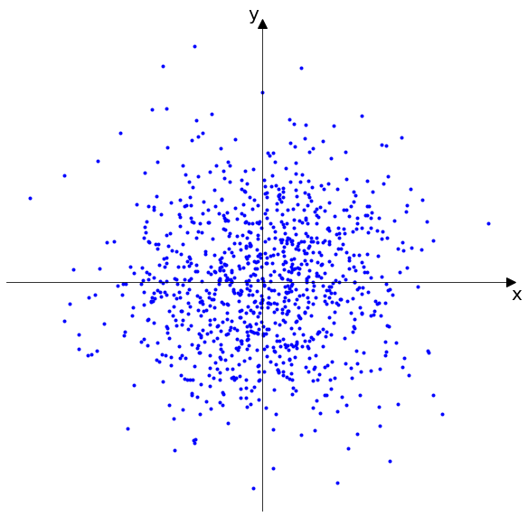
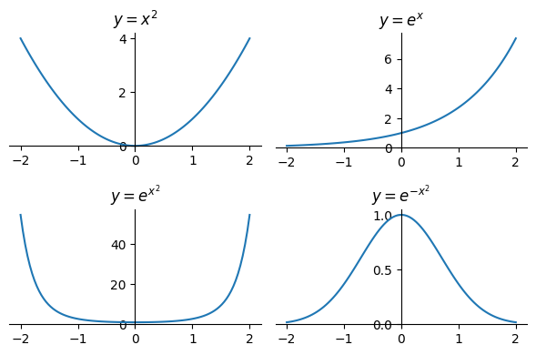
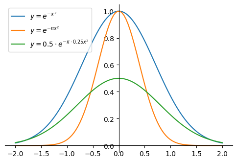

Normal Distribution
The Normal distribution (also called the Gaussian distribution) is one of the most important continuous distributions in probability and statistics. It appears naturally in many contexts due to the Central Limit Theorem and provides a foundation for many statistical methods.
Standard Normal Distribution
A continuous random variable \(Z\) is said to have the standard Normal distribution if its PDF \(f_Z\) is given by:
We write this as \(Z \sim N(0, 1)\) since, as we will show, \(Z\) has mean 0 and variance 1.
The constant \(\frac{1}{\sqrt{2\pi}}\) in front of the PDF may look surprising (why is something with \(\pi\) needed in front of something with \(e\), when there are no circles in sight?), but it's exactly what is needed to make the PDF integrate to 1. Such constants are called normalizing constants because they normalize the total area under the PDF to 1.
By symmetry, the mean of the standard normal distribution is 0. Here's why:
The standard normal PDF is symmetric about 0:
This means the distribution looks the same on both sides of 0. The mean is defined as:
Let's split this integral into two parts:
First integral (\(-\infty\) to 0): Let \(u = -z\), so \(z = -u\) and \(dz = -du\)
Second integral (0 to \(\infty\)): This is already in the right form
Since \(u\) and \(z\) are just dummy variables, we can write this as:
The integrand \(z \cdot f_Z(z)\) is odd because:
-
\(f_Z(z) = f_Z(-z)\) (even function)
-
\(z\) is odd
-
Product of even and odd functions is odd
For odd functions, the integral from \(-\infty\) to \(\infty\) equals 0.
Therefore, \(E[Z] = 0\).
Now let's show that the variance of the standard normal distribution is 1. The variance is defined as:
Since we already showed that \(E[Z] = 0\), we have \(\text{Var}(Z) = E[Z^2]\).
Calculating \(E[Z^2]\):
Let's use integration by parts with:
-
\(u = z\) and \(dv = z \cdot \frac{1}{\sqrt{2\pi}} e^{-z^2/2} \, dz\)
-
\(du = dz\) and \(v = -\frac{1}{\sqrt{2\pi}} e^{-z^2/2}\)
Integration by parts formula: \(\int u \, dv = uv - \int v \, du\)
The boundary term evaluates to 0:
-
At \(z = \infty\): \(z \cdot e^{-z^2/2} \to 0\) (exponential decay dominates)
-
At \(z = -\infty\): \(z \cdot e^{-z^2/2} \to 0\) (exponential decay dominates)
Therefore:
The remaining integral is exactly the integral of the PDF from \(-\infty\) to \(\infty\), which equals 1:
Therefore, \(\text{Var}(Z) = E[Z^2] = 1\).
The standard Normal CDF \(\Phi\) is the accumulated area under the PDF:
Some people, upon seeing the function \(\Phi\) for the first time, express dismay that it is left in terms of an integral. Unfortunately, we have little choice in the matter: it turns out to be mathematically impossible to find a closed-form expression for the antiderivative of \(f_Z\), meaning that we cannot express \(\Phi\) as a finite sum of more familiar functions like polynomials or exponentials. But closed-form or no, it's still a well-defined function: if we give \(\Phi\) an input \(z\), it returns the accumulated area under the PDF from \(-\infty\) up to \(z\).
General Normal Distribution
The general Normal distribution with mean \(\mu\) and standard deviation \(\sigma\) (or variance \(\sigma^2\)) is obtained by applying a linear transformation to the standard normal distribution. If \(Z \sim N(0, 1)\) is a standard normal random variable, then:
has a normal distribution with mean \(\mu\) and standard deviation \(\sigma\). We write this as \(X \sim N(\mu, \sigma^2)\).
Mean and Variance:
-
\(E[X] = E[\mu + \sigma Z] = \mu + \sigma E[Z] = \mu + \sigma \cdot 0 = \mu\)
-
\(\text{Var}(X) = \text{Var}(\mu + \sigma Z) = \sigma^2 \text{Var}(Z) = \sigma^2 \cdot 1 = \sigma^2\)
CDF: The CDF of \(X \sim N(\mu, \sigma^2)\) is:
where \(\Phi\) is the standard normal CDF.
Derivation of the CDF: Since \(X = \mu + \sigma Z\), we can find the CDF by:
PDF: The PDF of \(X \sim N(\mu, \sigma^2)\) is:
Derivation of the PDF from the CDF: We can derive the PDF by taking the derivative of the CDF with respect to \(x\):
Using the chain rule and the fact that \(\frac{d}{dz} \Phi(z) = \phi(z)\) (where \(\phi(z)\) is the standard normal PDF):
Since \(\frac{d}{dx}\left(\frac{x - \mu}{\sigma}\right) = \frac{1}{\sigma}\), we have:
Substituting the standard normal PDF \(\phi(z) = \frac{1}{\sqrt{2\pi}} e^{-z^2/2}\):
Standardization: Any normal random variable \(X \sim N(\mu, \sigma^2)\) can be standardized to a standard normal by:
This is the inverse of the transformation \(X = \mu + \sigma Z\).
Herschel-Maxwell derivation of the normal distribution
The Central Limit Theorem explains why sums of many small independent effects tend toward normality. The Herschel–Maxwell derivation is a different classical route: it characterizes the bell curve from independence and rotational symmetry alone.
Herschel's experiment
Herschel imagined a ball dropped many times toward a fixed mark in the plane. Each landing point has coordinates \((X, Y)\) measuring the error in the horizontal and vertical directions relative to the mark (origin).

After many trials, we model \((X, Y)\) by a joint PDF \(p(x, y)\).
Two postulates
- Independence of the coordinate errors:
- Isotropy (rotational symmetry): the joint density depends only on the distance from the origin, not on the angle. With \(r = \sqrt{x^2 + y^2}\),
Combining the postulates,
Reducing to one function
Set \(y = 0\). Then \(g(x) = f(x)\, f(0)\), so \(g\) can be expressed using \(f\) alone. Substitute \(g\!\left(\sqrt{x^2 + y^2}\right) = f\!\left(\sqrt{x^2 + y^2}\right)\, f(0)\) into the combined equation and divide by \(f(0)^2\):
Define \(h(x) = f(x)/f(0)\). Then
Why \(h\) must be a Gaussian-shaped exponential
Clearly \(h(x)\) is a composition of the square and an exponential function. The base of the exponential does not matter; the important point is the relationship
Since \(b^x = (c^{\log_c b})^x = c^{(\log_c b)\, x}\), we can pick a base and introduce a constant \(a\) that allows us to switch to any base:
After expanding \(h(x)\) again, we solve for \(f(x)\):
We know that \(x^2\) is always non-negative and that the exponential function grows indefinitely for positive values when the exponent is positive.
However, we want to derive a probability distribution, so \(a\) must be less than zero. Write \(a = -b^2\) and let \(c = f(0)\):
Now the maximum of each \(f(x)\) is at \(x = 0\), and the functions are symmetric around their maximum. Our formula describes a family of bell-shaped functions.

Normalization
For \(f\) to be a PDF,
Substitute \(u = b x\), \(du = b\, dx\):
So \(c = b/\sqrt{\pi}\), and
One may instead eliminate \(b\) in favor of \(c\); any equivalent parameterization leads to the same final normal family.

Gaussian integral (used above, not derived here)
The normalization step uses the standard Gaussian integral
We take this as a known fact; a full proof is omitted here.
What the joint density \(p(x, y)\) looks like
The Herschel–Maxwell steps above derive the marginal (one-dimensional) density \(f\) for a single coordinate error—horizontal \(x\) or, by the same argument, vertical \(y\). We never wrote a separate 2D functional equation for \(p(x,y)\) and solved it in one shot.
After normalization, that marginal is a one-dimensional normal, e.g.
The first postulate (independence) then assembles the joint PDF on the plane from these marginals:
So \(p(x, y)\) is a bivariate normal with mean \((0, 0)\), variances \(\sigma^2\) on both axes.
Geometry:
- Contour lines (level sets where \(p(x,y)\) is constant) are circles centered at the origin, because \(x^2 + y^2\) is constant on each circle.
- The plot over \((x,y)\) is a round bell above the plane: highest at the mark \((0,0)\), falling off equally in all directions— matching rotational symmetry.
- Slicing at fixed \(y = y_0\) gives the marginal shape in \(x\), namely \(f(x)\) up to a constant factor; a slice at \(y = 0\) is one cross-section of that 2D bell.
Why setting \(y = 0\) does not restrict us to one line
No, we are not restricting ourselves to just the line \(y = 0\). The solution we find using this trick applies to the entire 2D plane.
In mathematics, this is a standard technique for solving functional equations. Because the rule
is a universal law that must hold for every coordinate \((x, y)\) on the plane, it must also hold for coordinates where \(y = 0\).
By examining what happens along that single line, we uncover a structural link between the two unknown functions: along the \(x\)-axis we learn
in the radial form used above. Once we know that rule, we can apply it at any generic point \((x, y)\) in the plane.
The step “Why \(h\) must be a Gaussian-shaped exponential” then solves the full two-variable identity \(h(x)\, h(y) = h(\sqrt{x^2 + y^2})\) for all \(x, y\).
A simple analogy: Imagine finding a universal rule for sales tax from price and location, and the rule is consistent everywhere. To discover the basic formula, we temporarily look at the case “price = $1.00” only to simplify the arithmetic. Once that shortcut reveals the underlying tax rate, we do not discard it. We use that rate for $50, $100, or any other price. Setting \(y = 0\) plays the same role: a convenient line in the plane that exposes the structure, not a permanent restriction to that line.